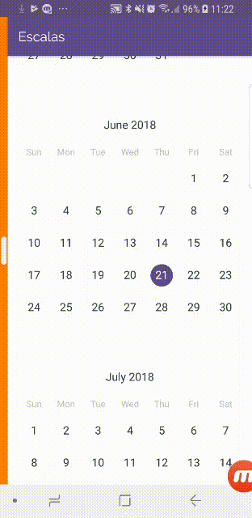
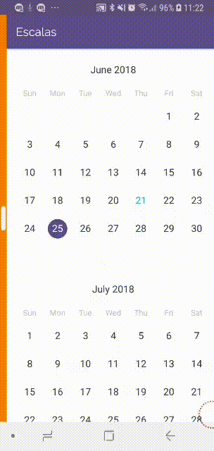
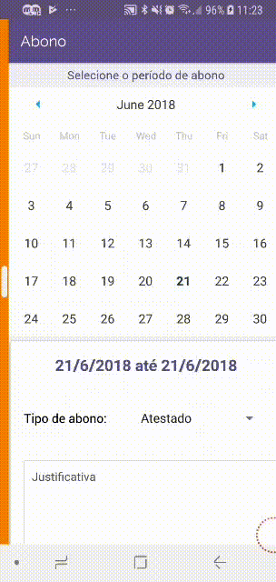

Organização simples de escalas
Aplicação de fácil utilização e intuitiva.
Foco na interação sistema-usuário
Veja as escalas de forma mais rápida e simples.


Veja o menu de forma intuitiva e mais interativa.
Pelo menu é possível acessar todas as funcionalidades disponíveis.
Solicite férias, abono de faltas e trocas de plantões de
forma prática em um único ambiente.

forma prática em um único ambiente.